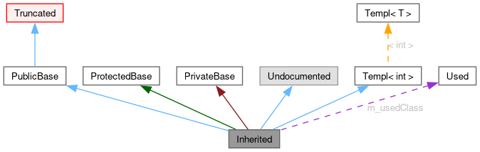

Ova stranica objašnjava kako interpretirati grafikone koje je generirao doxygen.
Na primjer:
class Invisible { };
class Truncated : public Invisible { };
class Undocumented { };
class PublicBase : public Truncated { };
template<class T> class Templ { };
class ProtectedBase { };
class PrivateBase { };
class Used { };
class Inherited : public PublicBase,
protected ProtectedBase,
private PrivateBase,
public Undocumented,
public Templ<int>
{
private:
Used *m_usedClass;
};
To će rezultirati grafikonom:
 Pravokutnici imaju slijedeće značenje:
-
Puni crni predstavlja klasu za koji je napravljen graf.
-
Pravokutnik s crnim rubom predstavlja dokumentiranu klasu.
-
Pravokutnik s sivim rubom predstavlja nedokumentiranu klasu.
-
Pravokutnik s crvenim rubom predstavlja dokumentiranu klasu Za koju nije prikazan graf naslijeđivanja. Graf je odrezan ako ne stane unutar određenih granica.
Strelice imaju slijedeće značenje:
-
Tamnoplava strelica označava public naslijeđivanje.
-
Tamnozelena strelica označava protected naslijeđivanje.
-
Tamnocrvena strelica označava private naslijeđivanje.
-
Ljubičasta isprekidana strelica se koristi ako je klasa dio druge klase ili ako se klasa koristi u drugoj klasi. Natpis na strelici je ime varijable u drugoj klasi Strelica je označena imenom varijable.
-
Žuta isprekidana strelica označava relaciju između template instance i template klase. Označena je imenom template parametra
 1.10.0
1.10.0